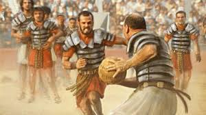
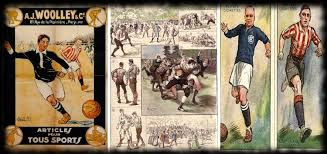
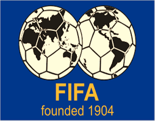

Historia del Fútbol
Desde sus orígenes hasta la actualidad
Orígenes antiguos
China (siglo III a.C.): Existía un juego llamado
"Cuju", en el que se pateaba una pelota de cuero hacia una red. Se practicaba como entrenamiento militar.

Grecia y Roma: También jugaban con pelotas en juegos como "episkyros" y "harpastum", aunque eran más violentos y no siempre usaban los pies.

Mesoamérica: En culturas como la maya y azteca existía el
juego de pelota, aunque era muy distinto al fútbol actual.
 Edad Media en Europa
Edad Media en Europa
Durante la Edad Media en Inglaterra, se practicaba una versión muy
rústica del fútbol, en la que aldeas enteras pateaban una pelota a
través del campo, a veces con cientos de personas. No había reglas
claras y solía terminar en peleas.

Nacimiento del fútbol moderno (siglo XIX)
En Inglaterra, a mediados del siglo XIX, las escuelas y universidades comenzaron a establecer reglas para el juego.
En 1863, se fundó la Football Association (FA) en Londres, marcando el nacimiento del fútbol moderno. Aquí se separó del rugby, que también usaba una pelota pero permitía el uso de las manos.
Expansión mundial
El fútbol se difundió rápidamente por el mundo gracias al imperio británico y los marineros, comerciantes y ferroviarios.
A finales del siglo XIX y principios del XX, ya se jugaba en países como Argentina, Brasil, España e Italia.

FIFA y las copas
En 1904 se fundó la FIFA (Federación Internacional de Fútbol Asociación).

En 1930 se jugó la primera Copa del Mundo en Uruguay, que también fue el país campeón.
Fútbol actual (siglo XXI)
Hoy en día, el fútbol es un fenómeno global, con miles de millones de aficionados.
Las Copas del Mundo, la Champions League, y torneos locales como la Premier League o LaLiga, son vistos por millones.
El fútbol femenino también ha crecido muchísimo, con más visibilidad, profesionalismo y competiciones como la Copa Mundial Femenina de la FIFA.